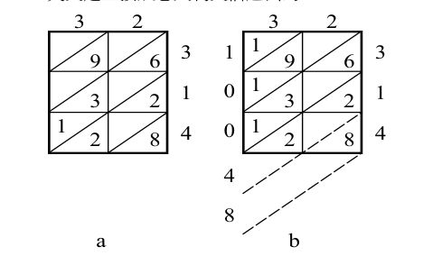
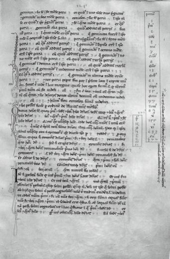

13世纪来临的那一年，列奥纳多（Leonardo Bonacci，约公元1170—约公元1250，后人称他为“比萨的列奥纳多”）从地中海东南部回到了欧洲的老家比萨。
列奥纳多的父亲一直为北非柏柏尔人建立的阿尔莫哈德伊朝管理比萨商站。九岁的时候，列奥纳多失去了母亲，从那时起他便随着父亲在阿拉伯世界闯荡。他遇到过许许多多皮肤黝黑的商人，这些人都用一种奇怪的方式记账，又快又准。比如，遇到乘法问题，商人们先在一片纸上草草画出一系列方格子，在格子里填上简单而怪模怪样的符号，1、2、3……他们把这些小怪物叫作印度数字。他们一边念念有词，一边在格子里又写又画，即刻就得到答案。见小列奥纳多看得津津有味，父亲忽有所悟。不久，父亲把列奥纳多送进了阿拉伯人开的算术学堂，到那里学习阿拉伯算法和印度数字。父亲本来打算让儿子学习几天，会了算数就离开，没想到小男孩被数学迷住了。后来，列奥纳多辗转埃及、叙利亚、希腊、西西里各地，学习当地的数学方法。他读到花拉子密的著作以后，决定专心研究印度和阿拉伯数学，因为那是最好的计算方法。
回到比萨两年，三十二岁的列奥纳多以“斐波那契”（Fibonacci）这个名字发表了著名的《计算之书》。“斐波那契”的意思是“波那契的儿子”（figlio di Bonacci）。在这本书里，列奥纳多介绍了从0到9这十个阿拉伯数字，引进了10进位制的概念，并令人信服地论证了它的优越性。他介绍了如何利用这个系统进行运算，尤其是它在算账、换算重量和尺度、计算利息、货币交换上的应用。在这一点上，列奥纳多有点像古代的中国数学家，重视实用，这大概和他经商的背景有关。比萨的列奥纳多被认为是中世纪欧洲最有才华的数学家。他对欧洲数学的影响和贡献，可以媲美但丁之于诗歌、米开朗琪罗之于绘画。
顺便提一下对应于0的英文字zero的来历。在古印度，对应于0的梵文是sunya，传到阿拉伯世界后，音变为sifr（本意是空无一物）。列奥纳多从阿拉伯人那里学到这个词，在用拉丁文写作时，引进一个新词zephyrum。这个字先在意大利文里变成了zefiro，然后在威尼斯口语里变成了zero。英文是直接从意大利文借过去的。

列奥纳多十分熟悉格子乘算法的原理。这也是花拉子密在他的《算法学》中研究过的。做乘法时，把乘数横写在格子的顶上，被乘数竖写在格子的右端，乘数与被乘数中的每一位数字逐次相乘，乘积放在与这两个数相对应的格子里，然后按照规则相加，就得到结果。比如，我们想知道3.2和3.14的乘积，先画出一个宽二高三的格子，每个格子用对角线隔出左上右下两个三角形地带。计算前，把3.2的两个阿拉伯数字3和2写在网格的上端，每个数字对应下面一列格子，再把3.14的三个数字写在网格的右边，每个数字对应左边一行格子，如图29a所示。
运算从网格的右上角开始，暂时不考虑小数点。先以3.2的2乘以3.14的3，把结果6写入对应这两个数字的格子的下三角里。再以3.2的3乘以3.14的3，得到9，把它写入对应的格子的下三角内，等等，依此类推。注意当所乘之积是两位数的时候（比如左下角的格子里3×4=12），十位的数字要写入该格子中的上三角里面，见图29a。
下一步，把所得的数字按照对角线所给出的方向逐行相加，加的时候从最低的斜行，也就是右下角开始，如图29b所示。最低的斜行所加结果是8，写在这个斜行的最左端。第二行2+2结果为4，第三行6+3+1是10，这是个两位数，我们把它的个位数（0）写在该斜行的右下角，把十位数（1）填入左上角，进入高一层的斜行（第四行）。这样，第四行的数字相加（9+1）又是个两位数（10），我们依法炮制，于是便在格子左边得到一列数字：10048。考虑到乘数和被乘数小数点后面一共有三位数，于是乘积的小数点后面应该有三位，所以结果是10.048。

图 30：《计算之书》初版当中的一页，现存于佛罗伦萨国家图书馆。右边长方形方框里面的数字就是斐波那契数列的前几个数字
当时欧洲在运算上仍然采用罗马数字，极不方便。罗马字母表示数目，I = 1，V = 5，X = 10，L = 50，C = 100，D = 500，M = 1000，等等。比如782用罗马数字来表示是DCCLXXXII。这种表达方式在加减乘除基本运算时非常令人头痛。阿拉伯数字加上格子乘算法，比欧洲落后的罗马数字计算不知要方便多少倍。任何人只要掌握了它的基本原理，都可以随时随地画出几个格子来进行计算。我们可以想象，列奥纳多的《计算之书》问世之后，在欧洲是多么受人欢迎。这个算法后来流传到中国，被称为“铺地锦”。
虽然列奥纳多的书在13世纪初就已经问世，真正的流传是在古登堡（Johannes Gensfleisch zur Laden zum Gutenberg，约公元1400—公元1468）制造了印刷机以后，也就是16世纪了。那时，列奥纳多的格子被装订成册，供人们计算之用。很快，“铺地锦”遍布整个欧洲大陆。
13世纪初，神圣罗马帝国的皇帝腓特烈二世（Frederick II，公元1194—公元1250）经常坐在列奥纳多老家比萨的宫廷里。这个混有日耳曼、诺尔曼、西西里血液的皇帝是中世纪最有趣的皇帝之一。他极富语言天赋，会说七种语言（拉丁语、西西里语、法语、德语、希腊语、希伯来语、阿拉伯语）。在西西里做国王的时候，他率先在宫廷里讲西西里语，这后来成为现代意大利语的前身。他对科学抱有孩子般的好奇心。比如，他收养过一些刚出生就丧失父母的孤儿。腓特烈二世雇了保姆给他们吃喝，为他们洗浴，可就是不准跟他们讲话。他要看看这些孩子能不能自动学会说话。他还想看看，这些孩子最先讲哪一种语言，究竟是希伯来语、希腊语、拉丁语呢，还是阿拉伯语。当然，这些可怜的孩子们长到好几岁，不但不会说话，连拍手都不会。腓特烈被后人称为“王座上第一位近代人士”，一位知识分子。
列奥纳多这时在比萨已经大名鼎鼎，所以腓特烈二世一到比萨就要会见这位著名的数学家。列奥纳多见到腓特烈二世的时候，这位皇帝还不到四十岁。腓特烈二世应该是个注重君威的人，因为他留下了大量塑像。他的雕像青年时俊美清秀，而且很沉静。但随着年岁的增长，他越来越清瘦，表情越来越严厉，在他老年的雕像中，我们看到的是一位极为严厉的君主，紧皱双眉，仿佛对整个世界都充斥了不满和怨恨。显然，皇帝是个很辛苦的活儿。但这些雕像很可能已经过了大力的美化。阿拉伯人对他的描述完全不同：“皇帝浑身上下长满了红毛，秃顶，近视眼。这样的奴隶在市场上还卖不到二百迪拉姆（阿拉伯地区的货币名称）。”“他有蛇一般蓝绿色的眼睛。”记录来自大马士革的学者、历史学家加瓦兹（Sibt ibn al-Jawzi，？—公元1256）。